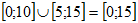
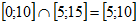
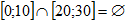

Des explications (enfin) claires en maths
En mathématiques, le programme de seconde vise à permettre à chaque élève de consolider les acquis du collège et la culture mathématique. L’évaluation est organisée selon plusieurs modalités : devoirs surveillés avec ou sans calculatrice, devoirs en temps libre, rédaction de travaux de recherche, compte rendu de travaux pratiques pouvant s’appuyer sur des logiciels.
Le programme s’articule en cinq grandes parties : nombres et calculs, géométrie, fonctions, statistiques et probabilités, algorithmique et programmation. En seconde, six compétences sont travaillées en mathématiques :
chercher, expérmimenter - en particulier à l'aide d'outils logiciels;
modéliser - faire une simulation, valider ou invalider un modèle ;
représenter - choisir un cadre (numérique, algébrique, géométrique...) ;
raisonner, démontrer - trouver des résultats partiels et les mettre en perspective ;
calculer - appliquer des techniques et mettre en œuvre des algorithmes ;
communiquer un résultat - par oral ou par écrit, expliquer une démarche.
L’histoire des mathématiques est également approchée pour permettre une meilleure contextualisation des notions.
Les ensembles de nombres permettent de représenter des groupes de nombres. Ils sont utiles pour écrire les solutions d'équations, d'inéquations ou pour l'ensemble de définition d'une fonction. Ils sont également très présents en probabilités et sont donc très utilisés dans les maths au lycée.
Nous avons déjà vu des ensembles en troisième avec les intervalles. Dans ce cours, nous allons voir des ensembles qui permettent de classer les nombres et nommer certains groupes de nombres particuliers, puis nous verrons ce que sont l'union et l'intersection de deux ensembles.
Les nombres entiers sont les nombres qui peuvent s'écrire sans virgule.
L'ensemble qui contient tous les nombres entiers est noté ℤ.
Les nombres entiers naturels sont les nombres entiers positifs.
L'ensemble de tous les nombres entiers naturels est noté ℕ.
Les nombres décimaux sont les nombres qui peuvent s'écrire avec un nombre fini de chiffres après la virgule (les nombres qui ne se terminent pas ne sont pas des nombres décimaux).
L'ensemble des nombres décimaux est noté ensemble D.
Les nombres réels regroupent l'ensemble des nombres que tu connais. Cet ensemble est noté ℝ.
On note aussi ℝ+ l'ensemble des nombres réels positifs, ℝ- l'ensemble des nombres réels négatifs et ℝ* l'ensemble des nombres réels sauf zéro. Il existe des nombres qui ne sont pas réels, ce sont les nombres complexes que nous verrons en terminale.
L'union de deux ensembles est l'ensemble qui contient tous les nombres du premier et tous les nombres du deuxième ensemble. On note l'union avec un grand U. Par exemple :
L'intersection de deux ensembles est l'ensemble qui contient tous les nombres qui sont à la fois dans le premier et dans le deuxième ensemble. On note l'intersection avec un U à l'envers. Par exemple :
L'ensemble vide, qui ne contient aucun nombre, est noté ∅.
Autres exemples
